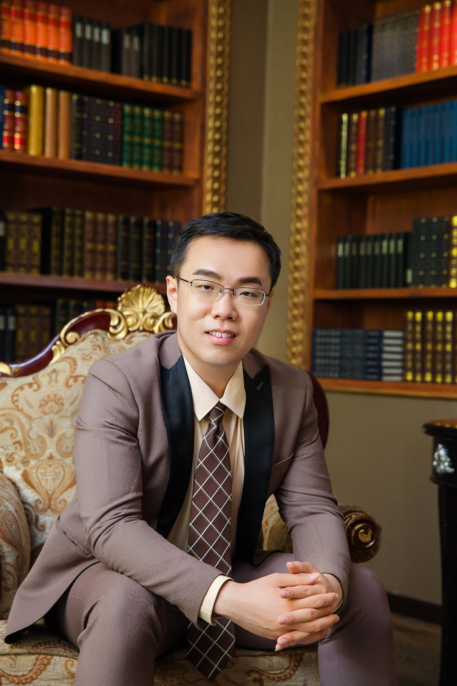

|
 |
"I find that the harder I work, the more luck I seem to have." - Thomas Jefferson Research Fellow, School of Computing, University of Leeds, UK Research Scientist, Big Data and Brain Computing Research Center(BDBC), Beihang University (aka. BUAA), China Office (LS): Room 8.02, E.C.Stoner Building, Leeds, UK, LS2 9JT Office (BJ): Room G504, New Main Building, No.37,Xueyuan Rd.,Haidian District,Beijing, China, 100191. Email: renyu.yang AT buaa DOT edu DOT cn or r.yang1 AT leeds DOT ac DOT uk |
What's new
(18/11/2017) I was awarded the Grand Class of Scientific and Technological Progress Award of Chinese Institute of Electronics of year 2017 for the key participating and contributions to the reliable resource management and scheduling. The joint project is led by Alibaba Cloud, Beihang University and Tsinghua University.
(08/11/2017) I moved to University of Leeds UK as a research fellow.
(28/09/2017) The work of efficient resource overselling was accepted by ACM SOSP 2017 poster session.
(01/09/2017) The work of machine learning based node performance analyzer was accepted by IEEE ICPADS 2017.
(18/08/2017) The work of rapid docker container deployment was accepted by IEEE HPCC 2017.
Check more previous events in old events
Short Bio
Hi,All! I am currently a research fellow with the school of computing, University of Leeds, UK. I am also an adjunct research scientist at the Big Data and Brain Computing Research Center, Beihang University, China. I was the research fellow and project leader of several national or international research and engineering projects in terms of distributed resource scheduling, cloud storage and geo-distributed data processing for intelligent decision making and massive-scale data analysis. we built large-scale resource management infrastructures to support those above. As for the specific research topics, we have been focusing on the scalable resource scheduling at Internet scale, reliable and dependable service provisioning by leveraging effective system failover, long tail mitigation, or quantitative reliability analytics and modeling etc. I has since 2013 published more than 25 peer-reviewed articles in the field of distributed systems and cloud computing.
Before this, I obtained my Ph.D in Jan. 2017 in the School of Computer Science and Engineering, Beihang University and supervised by Professor Jie Xu. I received my B.Sc. from School of Computer Science and Engineering, Beihang University ,China in June, 2011. The same year I was accepted as a ph.D student and became a member of the Institute of Advanced Computing Technology led by Professor Jinpeng Huai. In the past few years, I had been working in the Network Computing Group(NCG) at Beihang University, China and Distributed Systems and Services Group(DSS) at Univerity of Leeds, UK. I was the founder and team lead of SIGRS reseach group. During 2014 to 2016, I also joined Fuxi the Distributed Resource Scheduling Group in Alibaba Cloud Inc., participating in the development and research on cloud system issues at Internet scale. I am also a member of ACM, IEEE and CCF(China Computer Federation).
Academia & Industrial Experiences
2007.9-2011.6: B.Sc. (Supervised by Dr. Tianyu Wo), Beihang University, China
2011.9-2017.1: Ph.D. (Supervised by Prof. Jie Xu), Beihang University, China
2012.10-2013.1: Visiting Student (Supervised by Dr. Paul Townend and Prof. Jie Xu), University of Leeds, UK
2013.12 and 2016.3: Visiting Researcher, University of Leeds, UK
2014.2-2015.6: R&D Intern (Mentored by Mr. Zhuo Zhang and Chao Li ), Fuxi Distributed Scheduling Group, Apsara, Alibaba Cloud Computing Inc., Beijing, China
2015.7-2016.2: R&D Intern (Mentored by Mr. Chao Li and Yihui Feng), Distributed Scheduling Group, ODPS, Alibaba Cloud Computing Inc., Beijing, China
2016.4-2016.4: Visiting Researcher (work with Dr. Zhenyu Wen), University of Edinburgh, UK
2017.3- 2017.8: Research Fellow and Project Director, BDBC, Beihang University, China
2017.9 - Present: Research Scientist, BDBC, Beihang University, China
2017.11 - Present: Research Fellow, School of Computing, University of Leeds, UK
2017.12 - Present: Academic and Engineering Consultant, Edgetic Limited., Leeds, UK
Research Interests
Massive-scale distributed systems for big data, cloud computing and IoT
> Resource management, cluster scheduling, fault tolerance, dependability
> Large-scale system profiling, data-driven optimization
Selected Publications
X.Sun, C.Hu, R.Yang*, P.Garraghan, C.Li. ROSE: Cluster Scheduling through Efficient Resource Overselling, ACM/USENIX SOSP 2017 (poster)
Z.Wen, R.Yang*, P.Garraghan, T.Lin, J.Xu and M.Rovatsos. Fog Orchestration for IoT Services. IEEE Internet Computing, 2017
P.Garraghan, X.Ouyang, R.Yang*, D.Mckee and J.Xu. Straggler Root-cause and Impact Analysis for Massive-scale Virtualized Cloud Datacenters. IEEE Trans. on Services Computing, 2016
R.Yang, Y.Zhang, P.Garraghan, Y.Feng, J.Ouyang, J.Xu, Z.Zhang, C.Li. Reliable Compute Service in Massive-scale Systems through Rapid Low-cost Failover. IEEE Trans. on Services Computing,2016
R.Yang and J.Xu. Computing at Massive Scale: Scalability and Dependability Challenges. IEEE SOSE 2016
X.Ouyang, P.Garraghan, R.Yang, P.Townend and J.Xu. Reducing Late-Timing Failure at Scale: Straggler Root-Cause Analysis in Cloud Datacenters, IEEE DSN 2016 (short paper)
Z.Zhang, C.Li, Y.Tao, R.Yang*, H.Tang and J.Xu. Fuxi: a Fault-Tolerant Resource Management and Job Scheduling System at Internet Scale. VLDB 2014
L.Cui, J.Li, T. Wo, B.Li, R.Yang, Y.Cao, and J.Huai. HotRestore: A Fast Restore System for Virtual Machine Cluster, USENIX LISA 2014
Recent publications could be also found here: [Complete List] [My DBLP] [Googe Scholar]
Selected Projects
[1] Cloud Operating System - Multiple-grained Resource Management and Scheduling (No. 2016YFB1000503), supported by National Key Research and Development Programme, executive leader and coordinator, 2016.6 - present
[2] Storage Model and Mechanism for Joint Clouds (No. 2016YFB1000103), supported by National Key Research and Development Programme, executive leader and coordinator, 2016.5 - present
[3] On-demand Resource Aggregation and Execution in Massive-scale iVCE Environments (No.2011CB302602), supported by China 973 Fundamental Research and Development Programme, executive leader and coordinator, 2012.1 - 2015.9
[4] ChinaCloud Phase II: Fundmental Key Software for Cloud Platforms (No.2013AA01A213), supported by National 863 Hi-Tech Research and Development Programme, Key Member, 2013.1 - 2014.1
[5] ChinaCloud Phase I: Resource Virtualization and Scheduling (No. 2011AA01A202), supported by National 863 Hi-Tech Research and Development Programme, Key Member, 2011.9 - 2013.12
[Misc] Nature Science Foundation of China (91118008, 90818028, 61170294)
Co-advised Students
PhD students: Jianyong Zhu(2017.5- ), Xianyong Yi (2018.9 - )
Master student: Xiaoyang Sun(2015.9 - ), Yunfei Liu, Zhenping Li, Min Shi, Junqing Xiao, Ximing Qu (2017.9 - )
Lian Du (Master graduated in 2018, first employment at Alibaba Cloud Inc.)
Xixu Wang (Master graduated in 2017, first employment at Baidu Inc.)
Yuda Wang (Master graduated in 2015, first employment at China Telecom.)
Presentations
Some talks including the technical reports in the industrial meetings or academic presentations I gave could be found here: talks
Services
Some of my recent services could be found here: services
Awards
[2017] The Grand Class of Scientific and Technological Progress Award of Chinese Institute of Electronics, 2017
[2016] Outstanding Graduate Award of Beijing Graduates
[2013] Guanghua Scholarship Award for outstanding students 2013
[2013] “Best Paper Award” of the IEEE 11th International Symposium on Autonomous Decentralized System(ISADS 2013)
[2013] “Excellent Academic Award” of The Institute of Advanced Computing Technology, Beihang University
[2012] “Excellent Scientific Practice Award” of The Institute of Advanced Computing Technology, Beihang University
[2010] the 20th "FengRu Cup" Innovation Competition of Beihang University, Second Price
[2009] Excellence Student Scholarship of Beihang University
[2008] the 18th "FengRu Cup" Innovation Competition of Beihang University, Third Price
Friends and Collaborators
Dr. Zhenyu Wen Dr. Lei Cui Mr. Tao Lin
Dr. Ismael Solis Moreno Dr. Peter Garraghan Dr. Xue Ouyang Dr. Paul Townend
designed by Renyu Yang and updated by 19th December, 2017